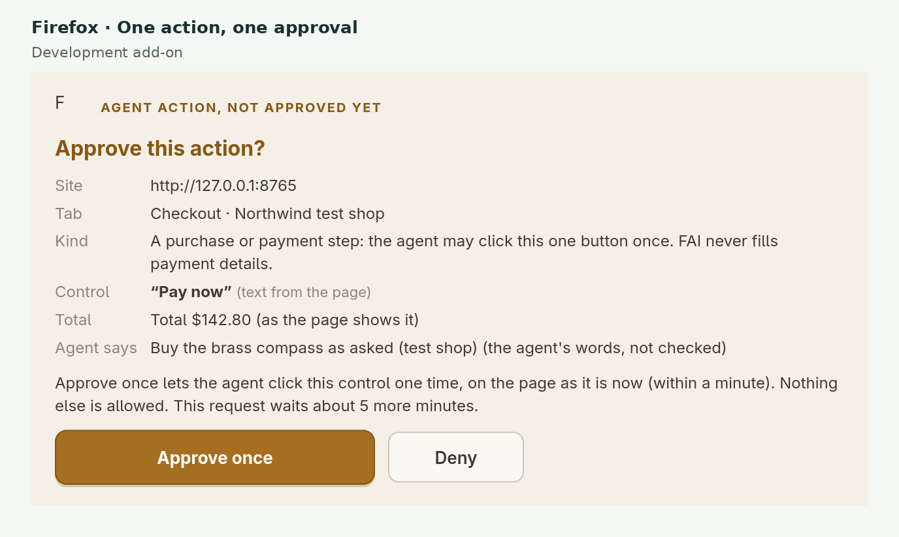
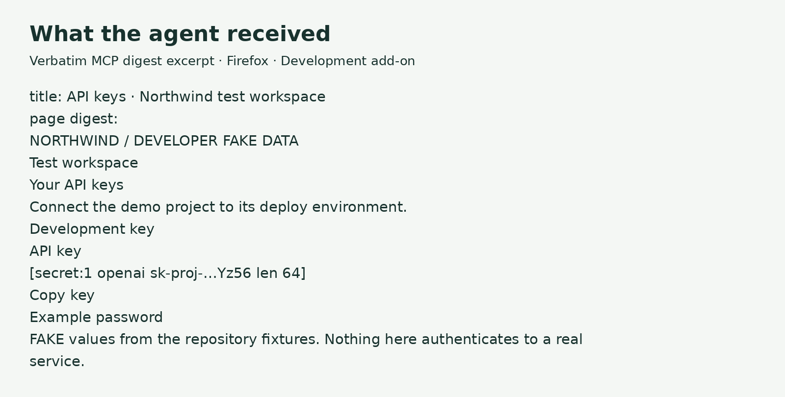

Flights
Partial resultFAI Agent direct174.51 s
Playwright MCP126.49 s
0 → 199.32 s
Both found the same €161 itinerary. Playwright inspected 15 outbound / 8 return options; FAI inspected 15 / 5. Neither established the cheapest available trip.
Open source · MITv0.6.2
Give your coding agent a browser task. Keep control of where it goes and what it can do. You approve the sites and permission level; FAI enforces that scope on every action and reports which requested checks passed.
Agent direct by default. No separate FAI model key or FAI provider calls. Your agent still uses its own model. Works through MCP with Claude Code, Codex and OpenCode.
A task. Named sites. A requested access level.
Your agent drives, inside that boundary.
A purchase needs Approve once.
Agent direct · gate enabled · outside testing
The default loop / Agent direct
Use the coding agent you already trust, with browser access you can define. Named sites, task-owned tabs and permission checks give each action a clear boundary. A returned status tells your agent whether to continue, ask you or stop.
The agent names the origins, task and lowest useful mode. A fresh task tab opens in your browser. You approve access and can lower the requested level. The agent cannot silently select your other open tabs.
fai_browser_open
Your agent receives a task-ranked digest, offered action IDs and a single-use page revision. It chooses each act; stale actions cannot be replayed.
fai_browser_act
An expectation checks the final URL, text or title. A passed receipt verifies that check. Broader task constraints still need evidence: a displayed price alone cannot prove the cheapest qualifying result.
verification.passed
Field notes / 07 November 2026
Three public tasks, two browser tools. Playwright was faster and used less fresh input in every pair. These exploratory trials show where FAI needs to improve.
One run per tool per task. FAI used Firefox; Playwright used Chromium, with different profiles and live site conditions. All six runs returned partial results. This is not a controlled ranking or a reliability test.
Wall time · lower is better · common zero baseline, shared scale across all three tasks
0 → 199.32 s
Both found the same €161 itinerary. Playwright inspected 15 outbound / 8 return options; FAI inspected 15 / 5. Neither established the cheapest available trip.
0 → 199.32 s
Playwright captured explicit no-host-charging evidence for a €59.99 item that FAI missed on the same product. FAI’s lowest inspected item (€34.99) lacked explicit eligibility confirmation. Delivered and accessory totals remained conditional.
0 → 199.32 s
Playwright inspected five listings (lowest displayed €245); FAI inspected four options across two pages (€382). Mandatory charges and radius eligibility remained unverified. Different coverage makes these prices unsuitable as a savings comparison.
Fresh input · lower is better · common zero baseline, shared scale across all three tasks
0 → 93,602 tokens
Both found the same €161 itinerary. Playwright inspected 15 outbound / 8 return options; FAI inspected 15 / 5. Neither established the cheapest available trip.
0 → 93,602 tokens
Playwright captured explicit no-host-charging evidence for a €59.99 item that FAI missed on the same product. FAI’s lowest inspected item (€34.99) lacked explicit eligibility confirmation. Delivered and accessory totals remained conditional.
0 → 93,602 tokens
Playwright inspected five listings (lowest displayed €245); FAI inspected four options across two pages (€382). Mandatory charges and radius eligibility remained unverified. Different coverage makes these prices unsuitable as a savings comparison.
| Task / tool | Wall (ms) | Calls | Fresh input | Cached input | Total input | Output |
|---|---|---|---|---|---|---|
| Flights / FAI Agent direct | 174508.3562 | 35 | 69,960 | 1,536,512 | 1,606,472 | 2,732 |
| Flights / Playwright MCP | 126487.057505 | 30 | 55,035 | 862,592 | 917,627 | 1,815 |
| Amazon / FAI Agent direct | 166397.16372699998 | 22 | 70,332 | 1,004,032 | 1,074,364 | 2,955 |
| Amazon / Playwright MCP | 148313.102858 | 22 | 53,045 | 878,336 | 931,381 | 3,306 |
| Airbnb / FAI Agent direct | 199317.527531 | 42 | 93,602 | 2,305,280 | 2,398,882 | 3,577 |
| Airbnb / Playwright MCP | 193213.19957 | 40 | 77,926 | 2,000,128 | 2,078,054 | 3,203 |
Approve the sites, task tabs and permission level. FAI enforces that scope throughout the session and reports which requested checks passed. You can inspect the result, pause the task and decide when to grant more access.
All six runs requested gpt-6-astra through Codex CLI 0.167.0. Actual model identity was not independently reported. Runs were sequential. Prompts, tool schemas, profiles and site state differed; exact approval waiting time is unknown. New semantic fixes were not loaded during these runs.
FAI’s passed checks covered displayed price or URL expectations only. Playwright has no native FAI-style receipt. Neither establishes a fully verified cheapest qualifying result. FAI’s permission enforcement and scoped checks are product capabilities; these trials do not establish a safety or reliability advantage. Dollar costs are unavailable, and the partial results cannot support a cost-per-success claim.
Flights / Amazon / Airbnb: Playwright recovered from 6 / 1 / 4 interaction errors. FAI encountered 3 / 1 / 5 stale-action responses, plus one missing-control response on flights. Zero reported Playwright access refusals does not establish superior safety for either tool.
A flight sandbox initialization failed; a flight handoff stopped on an unrelated paused-request status; an earlier Amazon attempt stopped at a blocked_risky control; an earlier Playwright Airbnb attempt ended on the extension welcome page before the task tab was selected. They remain in the public attempt ledger and are not silently counted as successes. The separate Gmail case below is not part of these paired measurements.
Download measurements & attempt ledger (JSON)Chart generator
Separate case / Gmail / Playwright MCP Task not completed
The agent submitted the search and reported the matching query, visible results and dates. It stopped before opening the sort menu or checking that it closed unchanged. Result coverage remained incomplete.
Agent-reported outcome, corroborated by the user who observed the attempt; no native verification receipt.
Search the mailbox, inspect visible results and dates, then open the sort menu and close it without changing the selection.
43.62 seconds · 9 tool calls · 14,280 fresh input tokens · 112,512 cached input tokens · 126,792 total input tokens · 835 output tokens.
This agent, tool and runner attempt was incomplete, with zero reported access refusals. It does not establish that Playwright generally fails at Gmail or that FAI is more consistent.
An earlier FAI session in Firefox passed narrow search and menu open/close checks, with host usage unavailable. Different browsers, sessions and tool policies mean there is no matched FAI timing, cost or reliability comparison.
Earlier attempts that did not reach the intended Gmail session are excluded as setup failures, not model refusals. The requested model was gpt-6-astra; actual model identity was not independently reported. Dollar costs are unavailable.
Only sanitized task outcomes and aggregate usage are published. Mailbox content, account identifiers, browser profiles and local paths are omitted.
Product film / Local test shop
Approval, verified checkout and secret redaction in a genuine local Firefox session.
An edited presentation of real Firefox 159 development-build UI on local fixtures. A scripted MCP client made real calls and automation clicked the approval UI; this was not a live model-driven session. All keys are fake, no real purchase occurred, and the footage is not of the current signed release.
Shipped in 0.4 – 0.6
Recent releases make the loop smoother for you and your agent. None of them widen what an agent may do: every action still passes the level, origins and Approve gate you set.
On a normal web tab, the toolbar popup’s Invite an agent to this tab hands that tab to a live Claude Code, Codex or OpenCode session, at the level you pick. The invite is single-use, expires after 10 minutes and is bound to the tab’s exact origin.
Claude Code, Codex and OpenCode sessions are woken when you approve or resume their request, so you no longer type “done” in the chat. Wake messages are fixed templates with no page content (an invite adds only the words you typed). Other MCP clients get a line to paste.
Pair the Firefox add-on and a Chromium-family browser at the same time. Each holds its own task tab; a new request opens in the browser you used last, or the one the agent names, and any other browser can take it with Open here.
A cross-origin frame inside the page, such as an admin portal’s content pane, is read and acted on when its own origin is one you approved, with the same rules inside it. Other frames are never read and are boxed in screenshots.
Approve works on the first click, even while the page is still loading. Every click names its request, so an older paused task cannot take an approval meant for a new one; stale paused tasks fold away in the popup.
About once a day the local service checks GitHub’s releases anonymously. The popup shows Update available; nothing installs until you click Update or run node src/cli.js update. It refuses while an agent holds a tab and rolls back on failure.
Deliberate control
Guardrails are enforced in the extension and local service, not left to prompt etiquette. They reduce exposure; they are not a promise that every secret or risky action can always be detected.
In Agent direct with the Approve gate enabled, a payment action pauses for Approve once. That approval applies to one control, on the current page, within a short window. With the gate off, purchases are refused.

Recognised keys, tokens, passwords and card numbers are replaced before page text reaches the agent. Sensitive pixels are blacked out in requested screenshots. This is pattern-based protection: unusual formats, short prose passwords and text inside images can be missed.
Read redaction scope and limits
Read, Use or Act is your choice per tab. Origins and optional forbidden labels constrain every subsequent action. Testing mode is available only for origins you explicitly configure as test sites.
Sign-in is handed back to you. Agents may enter credentials only in your configured test environments. Saved secret handles cannot currently fill password fields on sign-in forms, including test forms.
The extension and FAI service run locally. Browser observations go to your coding agent and its model provider. FAI itself makes no model or provider calls.
From clone to first approved tab
All install paths need Node 22+, the local FAI service and MCP server from the repository. Linux and macOS are tested; Windows is untested.
# get the local service and extension
git clone https://github.com/jedbjorn/fai-browser.git
cd fai-browser
npm ci
# pair your browser and coding agents
npm run setupSetup saves pairing locally, starts the service and offers to register Claude Code, Codex and OpenCode. No model key is needed for Agent direct. Later updates are one click in the popup.
Accept the Firefox prompt during setup, or run node src/cli.js launch. You get official Firefox, a separate FAI profile and the signed add-on—Firefox itself is unmodified.
Install the signed .xpi from GitHub Releases after npm run setup. Firefox 140+; Snap and Flatpak builds are not supported by the standard pairing path.
Chrome, Chromium, Brave, Edge or Vivaldi 116+: enable Developer mode and load the repository’s extension/ directory unpacked. There is no Chromium store listing.
Automating a website may break its terms of service; you are responsible for following the terms of the sites you use FAI on. FAI is provided as-is under the MIT license, and its authors are not responsible for how it is used. Your settings, pairing secret, screenshots and task history are stored only on your machine, and keeping them secure is up to you. FAI never sends your data to us; data goes only to the providers you configure. Full notice
Fair questions
FAI Browser is a prototype. Its boundaries are part of the product, not footnotes to hide later.
No. Agent direct uses your existing coding agent and its model through MCP. FAI supplies browser observations and actions, not intelligence.
No. It requests origins and a reason; only you approve the tab. One task tab is the default; a popup or new tab pauses the task. If you enable Multiple task tabs and approve a new request, the agent can use up to eight task-owned tabs on the approved site. The agent cannot silently select your other open tabs.
No universal guarantee is possible. FAI redacts recognised secret formats and sensitive fields in text and screenshots, but pattern-based filtering can miss unusual formats, short secrets in prose or text embedded in images. Use a separate profile and sign in only to accounts the task needs.
Sign-in and credential entry are restricted to test origins you configure. In Agent direct with the gate enabled, a purchase needs your explicit Approve once. With the gate off, purchases are refused outside configured testing mode.
Claude Code, Codex and OpenCode sessions registered with FAI are woken when you click Approve or Resume, and continue on their own. Other MCP clients, and hosts FAI cannot reach, get a short line in the popup to paste into the chat.
FAI’s own data (settings, the pairing secret, screenshots, traces and task history) is stored only on your machine. Traces and screenshots are pruned automatically (by default 50 runs, 500 MB or 7 days). FAI never sends your data to us; data goes only to the providers you configure. Page text and any screenshots the agent asks for go to your agent’s model provider. Besides the anonymous daily update check (which you can turn off), FAI only contacts GitHub and Mozilla to download Firefox, the add-on or an update you asked for.
No. The recommended launcher starts Mozilla’s unmodified Firefox with a separate FAI profile and the signed FAI add-on. Your everyday Firefox profile stays separate. FAI does not redistribute a modified browser.
In three exploratory task pairs, Playwright used less fresh input and less wall time, with broader coverage of relevant facts. Different browsers, profiles and live conditions prevent causal conclusions. All runs produced bounded partial results. The page publishes the measurements and omitted-attempt ledger; it makes no consistency, success-rate or dollar-cost claim.
Free · open source · MIT